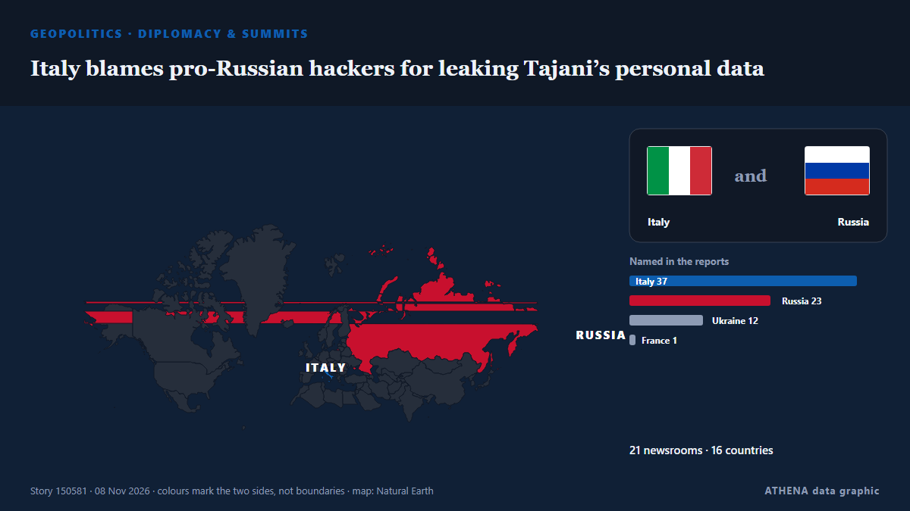

Italy blames pro-Russian hackers for leaking Tajani’s personal data

Italy’s prime minister, Giorgia Meloni, has blamed pro-Russian hackers for posting the foreign minister’s personal data on the dark web. from The Next Web
Reported independently by 24 outlets in 16 countries since 7 Nov, first by The Independent; coverage is at its peak. ATHENA rates the risk elevated (5.7/10), driven mainly by the severity of the harm described and its geographic and sector reach. Confidence is 89% (high), with 24 independent outlets corroborating it and an average source reliability of 77%. Outlets by country: United States (5), United Kingdom (2), Italy (2). Coverage: 7 Nov to 9 Nov, 51 hours.
Why it matters: Russia's full-scale invasion of Ukraine began in February 2022. This tracker follows the fighting, strikes on infrastructure and the diplomacy around the war, as covered by outlets around the world.
What changed: 6 new reports from 6 outlets in the 24 hours to 9 Nov.
First reported as: Italy foreign minister says he has been targeted by pro-Russian hackers over Ukraine backing
How to read this page
- What you are reading
- 24 outlets in 16 countries reported this event. The reports below are listed in the order they appeared; each headline opens the original article. ATHENA writes none of the reports.
- Our reading
- For the record — The reports describe a completed, domestic, commercial or personal matter. We list it so you can see who reported it and when. We are not tracking a risk of wider conflict here.
- How much evidence
- Fair Several independent outlets agree, but the picture could still change.
After repeats, off-topic items and stale reports are removed, 20 of the 25 listed reports are counted; 100% of the headlines match the event.
About 35% of the headlines are analysis or opinion rather than straight reporting.
- What this does not mean
- ATHENA measures how an event is reported, not whether it is true. This is not a forecast, a judgement on who is right, or advice.
- What would change it
- Reports from other independent outlets showing a different development, or a firm confirmation or denial from an official source.
Reading R2 · refreshed with every update of this page. ATHENA has not yet published a track record for these readings; when it does, it will be linked here.
At a glance
Selected, scored and written by ATHENA's published methodology. No editor intervenes in individual events. How this is produced ›
| 07 Nov 10:22 UTC | 6 |
|---|---|
| 07 Nov 12:22 UTC | 4 |
| 07 Nov 14:22 UTC | 2 |
| 07 Nov 16:22 UTC | 3 |
| 07 Nov 18:22 UTC | 0 |
| 07 Nov 20:22 UTC | 0 |
| 07 Nov 22:22 UTC | 0 |
| 08 Nov 00:22 UTC | 0 |
| 08 Nov 02:22 UTC | 1 |
| 08 Nov 04:22 UTC | 0 |
| 08 Nov 06:22 UTC | 1 |
| 08 Nov 08:22 UTC | 1 |
| 08 Nov 10:22 UTC | 0 |
| 08 Nov 12:22 UTC | 1 |
| 08 Nov 14:22 UTC | 2 |
| 08 Nov 16:22 UTC | 1 |
| 08 Nov 18:22 UTC | 0 |
| 08 Nov 20:22 UTC | 0 |
| 08 Nov 22:22 UTC | 0 |
| 09 Nov 00:22 UTC | 0 |
| 09 Nov 02:22 UTC | 1 |
| 09 Nov 04:22 UTC | 0 |
| 09 Nov 06:22 UTC | 0 |
| 09 Nov 08:22 UTC | 0 |
| 09 Nov 10:22 UTC | 1 |
| 09 Nov 12:22 UTC | 1 |
| 07 Nov 13:02 UTC | 3.8 |
|---|---|
| 07 Nov 13:14 UTC | 4.7 |
| 07 Nov 13:53 UTC | 2.2 |
| 07 Nov 16:27 UTC | 5.5 |
| 09 Nov 13:15 UTC | 5.7 |
Why these numbers
Importance
Risk
Confidence
The reporting — who reported it, and when
headline as published · opens the original- The Independent · United KingdomItaly's foreign minister says cybercriminals spread his personal data on the dark web
- Channels TV · NigeriaHackers Target Italy Foreign Minister
- The Local Italy · ItalyHackers target Italian foreign minister
- TRT World · TurkeyItalian FM says cybercriminals spread his personal data on dark web, exposing family to threats
- Anadolu Agency (English) · TurkeyItalian foreign minister says personal data leaked on dark web, exposing him to 'threats, intimidation'
- ABC News (International) · United StatesItaly's Meloni blames pro-Russian hackers for leak of foreign minister's data on the dark web
- The Straits Times · SingaporeItaly foreign minister says he has been targeted by pro-Russian hackers over Ukraine backing
- Al Jazeera English · QatarPro-Russian hackers leak Italian foreign minister’s data on dark web
- To Vima (English) · GreeceItaly’s Tajani Says Personal Data Leaked On Dark Web
- DW English · GermanyItaly's Meloni blames pro-Russian hackers for cyberattack on minister
- The Jerusalem Post · IsraelItaly foreign minister says he has been targeted by pro-Russian hackers over Ukraine backing
- Kyiv Independent · UkraineItaly's foreign minister targeted in cyberattack due to Ukraine stance, minister says
- BBC News · United KingdomItalian foreign minister says hackers leaked his personal data
- AzerNews · AzerbaijanMeloni blames Tajani leak on pro-Russian hackers
- Arab News · Saudi ArabiaMeloni blames pro-Russian hackers for leak of foreign minister’s data on the dark web
- The Business Standard (Bangladesh) (working feed) · BangladeshMeloni blames pro-Russian hackers for leak of Italian foreign minister's data
- Nile Post · UgandaItalian foreign minister says hackers leaked his personal data
- CBS News (World) · United StatesItaly's leader blames pro-Russian hackers for personal data leaks
- Kyiv Post · UkraineSybiha Backs Italian FM Tajani Targeted by Pro-Russian Hackers
- The Hill · United StatesGiorgia Meloni blames pro-Russian hackers for leaking foreign minister's personal data to dark web
- The Next Web · NetherlandsItaly blames pro-Russian hackers for leaking Tajani’s personal data
- The Straits Times · SingaporeG7 ministers to discuss recent cyber attacks, Italy says
- Wanted in Rome (working feed) · ItalyItaly foreign minister Tajani targeted by pro-Russian hackers
- SecurityWeek · United StatesItaly’s Meloni Blames Pro-Russian Hackers for Leak of Foreign Minister’s Data on the Dark Web
- The Record (Recorded Future News) · United StatesPro-Russian hackers target European officials, offer rewards for personal information